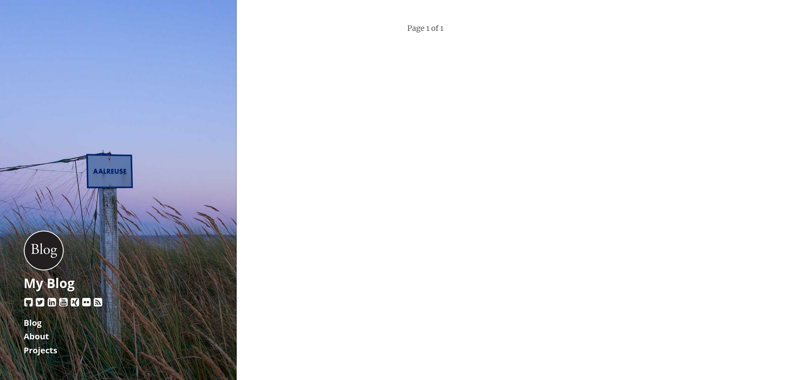
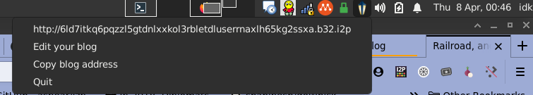
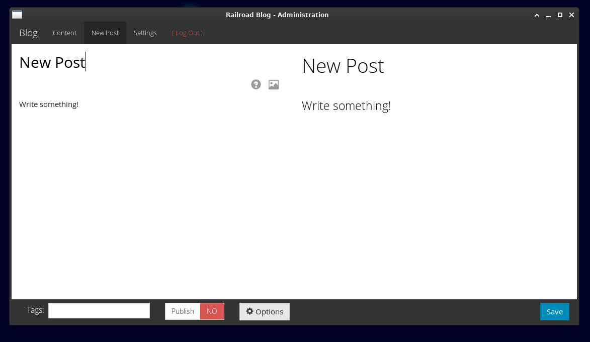
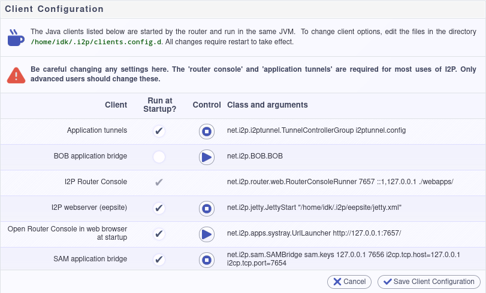

Really, really easy, individual-oriented I2P blogging with a low barrier to entry formerly based on kabukky/journey, now completely forked.
The first time you run Railroad you'll need to set a password, then re-start the application. You can do this by visiting the WebView(via the traymenu) or by visiting http://localhost:7672/admin/login.
Enable the SAM API: Go to http://127.0.0.1:7657/configclients. Find the menu item called "SAM application bridge." Select "Run at Startup" and press the small arrow to the right of the text.

Linux I2P Plugin: http://idk.i2p/railroad/railroad-linux.su3
Binary Releases: Github

go get -u i2pgit.org/idk/railroad
If your GOPATH is unset, set it to $HOME/go
export GOPATH=$HOME/go
If your $GOPATH is set, leave it as-is.
mkdir -p $GOPATH/src/i2pgit.org/idk/railroad
git clone https://i2pgit.org/idk/railroad \
$GOPATH/src/i2pgit.org/idk/railroad
cd $GOPATH/src/i2pgit.org/idk/railroad
make releases
Enable the SAM API: Go to http://127.0.0.1:7657/configclients. Find the menu item called "SAM application bridge." Select "Run at Startup" and press the small arrow to the right of the text.

Download the package for your platform, zip for Windows, tar.gz for Linux.
Unzip the package and double-click the railroad.exe file for Windows or the
railroad file for Linux.
Using checkinstall to generate a deb is done for you:
mkdir -p $GOPATH/src/i2pgit.org/idk/railroad
git clone https://i2pgit.org/idk/railroad \
$GOPATH/src/i2pgit.org/idk/railroad
cd $GOPATH/src/i2pgit.org/idk/railroad
make checkinstall
sudo apt-get install ./i2p-railroad_0.0.01-1_amd64.deb
will set up railroad on Debian and Ubuntu for your system.
make installWhen using make install a wrapper script is installed to set up railroad in
the user's $HOME/.config/railroad directory. It's installed to
/usr/local/bin/railroad.
mkdir -p $GOPATH/src/i2pgit.org/idk/railroad
git clone https://i2pgit.org/idk/railroad \
$GOPATH/src/i2pgit.org/idk/railroad
cd $GOPATH/src/i2pgit.org/idk/railroad
sudo make install